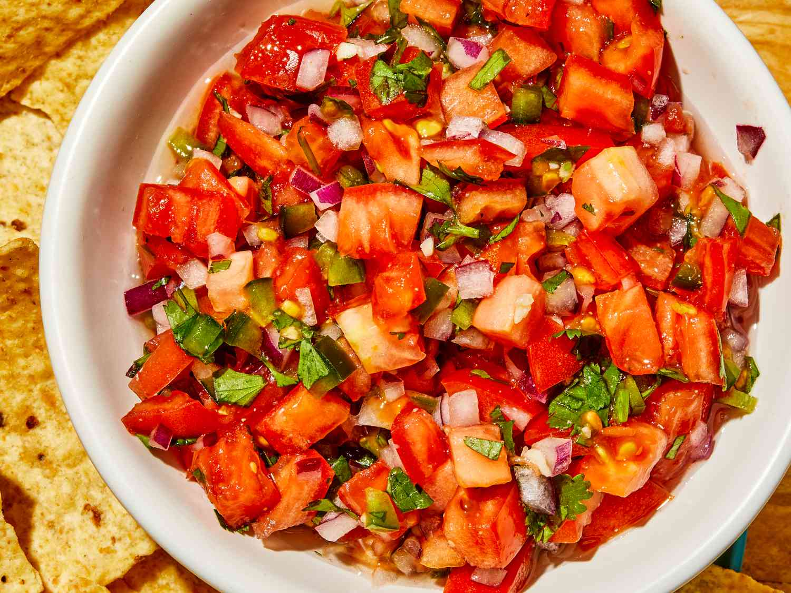

Pico de Gallo

**Note this recipe is from
allrecipes.com
and is used for practice purposes.
Description
This pico de gallo is loaded with freshly chopped tomatoes, red onion,
jalapeño, and cilantro. It makes a great party appetizer with tortilla
chips or use as a topping for tacos. Huge hit in my house! For more
intense flavor, chill for up to 3 hours before serving.
Ingredients
- 6 roma tomatoes, diced
- 1/2 red onion, minced
- 3 tablespoons chopped fresh cilantro
- 1/2 jalapeño pepper, seeded and minced
- 1/2 lime, juiced
- 1 clove garlic, minced
- 1 pinch garlic powder
- 1 pinch ground cumin
- salt and ground black pepper
Steps
- Gather all ingredients.
-
Stir tomatoes, onion, cilantro, jalapeño pepper, lime juice, garlic,
garlic powder, cumin, salt, and pepper together in a bowl.
- Enjoy!